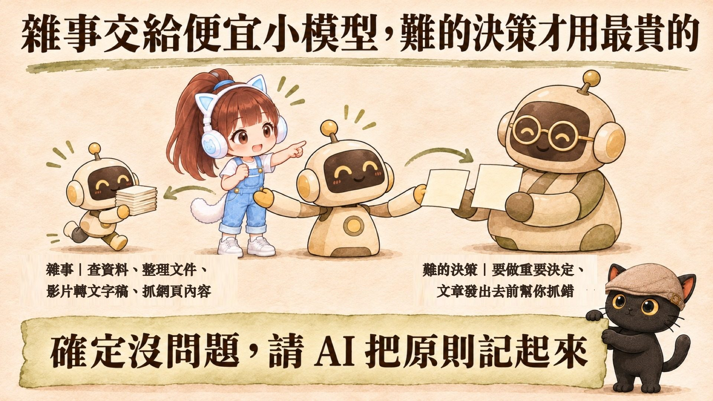
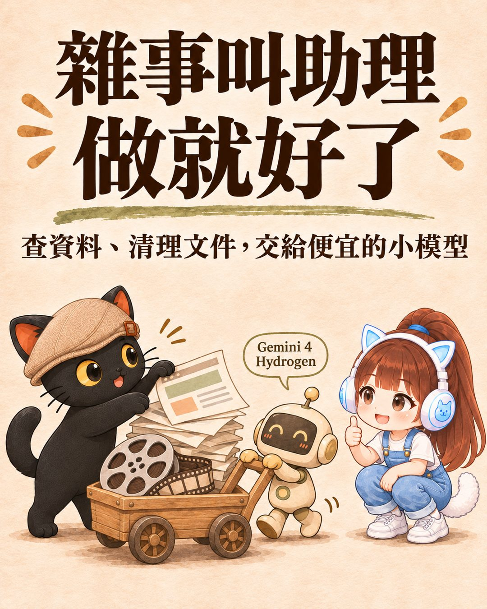
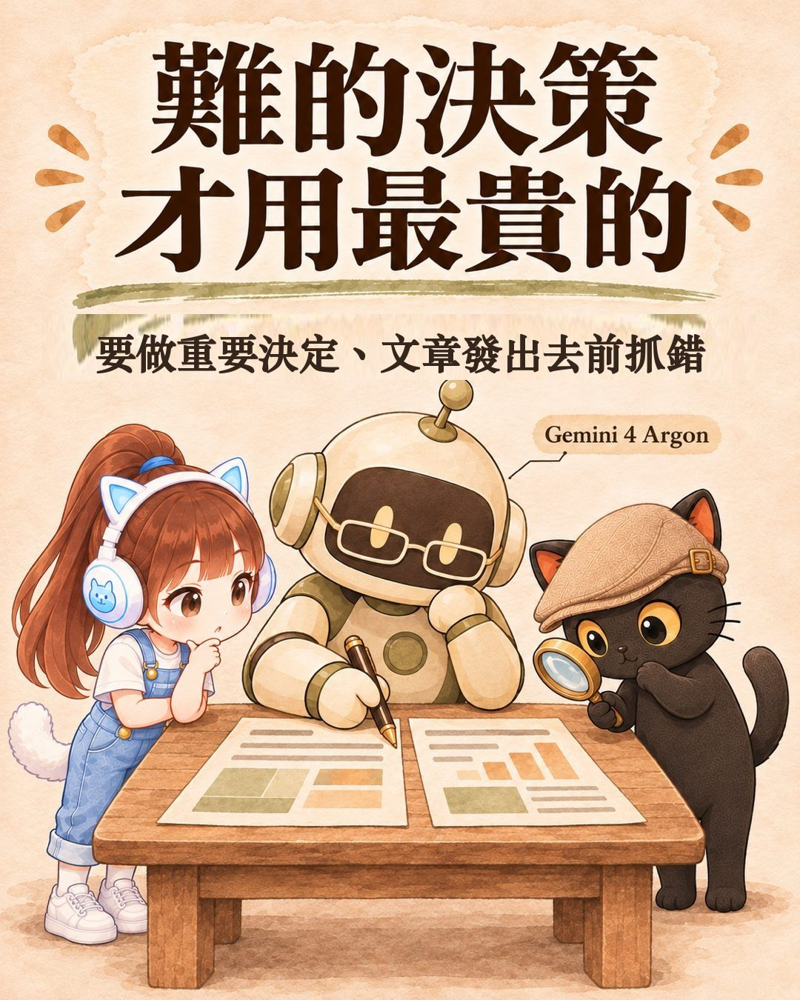
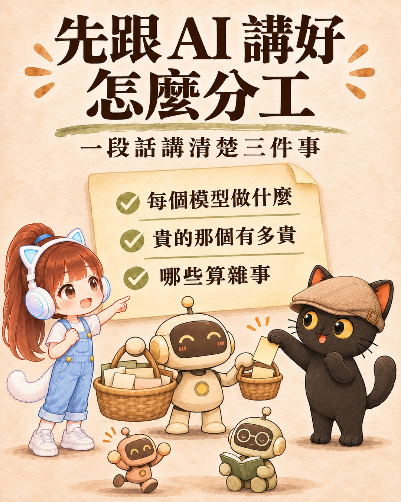
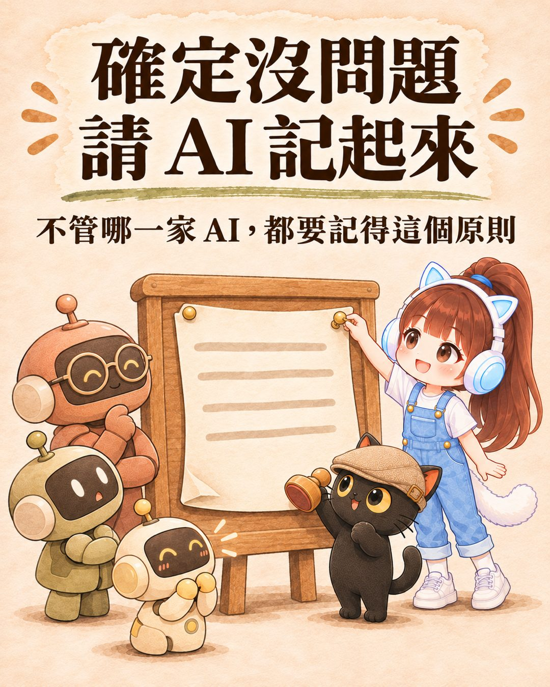

用 AI 做事，如果查資料、清文件這種小事也叫最貴的模型，每週的額度很快就用完了。真正要它幫忙想清楚的時候，反而沒得用。
這篇整理我陪跑時交代 AI 的一段話：哪些雜事派給便宜的小模型，哪些難的事才叫最貴的。最後一步，是確定沒問題之後，請 AI 把這個原則記起來。
這篇寫給已經在用 Claude Code、Codex 這類會自己動手做事的 AI 工具，手上有不只一個模型可以用的人。文中的模型是 Google 的 Gemini 4，你用的模型不一樣，換成自己手上便宜的和貴的就好。只用 ChatGPT、Gemini 網頁版聊天的人，也可以照同一個分法，自己切換模型。
- AI 額度常常不到週末就用完
- 手上有便宜和貴的模型，不知道怎麼讓 AI 自己分
- 想讓 AI 記住一條分工原則，以後不用每次重講
- 一段可以直接複製的分工提示詞
- 一張圖：哪些算雜事、哪些才叫最貴的
- 這段話裡的三個重點
- 照著做的三步
一張圖看懂模型分工：雜事派便宜的小模型，難的決策才叫最貴的

我用的是 Google 的 Gemini 4：便宜的小模型是 Gemini 4 Hydrogen，最貴的是 Gemini 4 Argon。
陪跑現場：請 AI 上網找解法，我交代它用便宜的小模型去找
有一次我幫 Lindy 陪跑。她是一人接四個社團的專業執行秘書。陪跑時，交給 AI 做的工作卡住了，我請 AI 上網找解法，順便交代它用哪個模型去找：
幫我用 Gemini 4 Hydrogen 去找好不好？用 Antigravity 去弄，你走 Antigravity 的路線。以後我叫你上網找資料的時候，你都幫我用 Gemini 4 Hydrogen 去找。上網查資料這種簡單活，就不要浪費貴貴的額度。

這裡的 Antigravity 是 Google 出的 AI 工具，裡面可以選 Gemini 4 Hydrogen、Gemini 4 Argon 這些模型。我跟 Lindy 是這樣解釋的：
Antigravity 的意思就是，我是要叫 Antigravity 去用什麼模型去查東西，然後再回過來。
也就是說，在 Claude Code 裡交代一句，它就會叫 Antigravity 用你指定的模型去查，查完把結果帶回來。查資料這件事，就不用花到最貴的額度。
我交代 AI 的一段話：哪種事派哪個模型

那次我順手把整套分工講清楚。前半段講貴的那個什麼時候才用：
這個是拿來做雜事的，上網查資料、清理資料，有的沒的就用這一個。然後那個 Gemini 4 Argon，它比較是負責輔助決策的。你要記住 Argon 很貴喔，它每一週的額度很少。所以當我跟你說，我需要輔助決策、我需要做雙軌互審，Claude Code 跟 Gemini 雙軌互審的時候，比較複雜的輔助決策、審稿，才用 Argon。
後半段講哪些算雜事：
但是上網查資料、整理資料、清理文件，幫我下載什麼的，比如我丟一個 YouTube 影片給你，你把影片下載下來，然後轉逐字稿之類的；我丟一個網站給你，要你去爬資料，全部就用 Gemini 4 Hydrogen 那個版本。雜事叫助理做就好了。
這段話裡有幾個是我自己的用語：「輔助決策」是要做重要決定時，請 AI 幫我想清楚；「雙軌互審」是請兩家不同的 AI 各做一份，再互相檢查；「審稿」是文章發出去前，請 AI 幫我抓錯；「轉逐字稿」是轉成文字稿，「爬資料」是把網頁上的內容抓下來。這種怕出錯、要想得深的事，才值得花最貴的額度。整理成可以複製的版本，放在後面。
- 頂規 AI 模型很貴，哪些事交給它、哪些交給便宜的？｜Opus 5.5 動腦、Luna 搬磚的實際分工 這一段講怎麼一段話交代 AI，那篇講我自己整套怎麼分，還有判斷一件工作該交給哪個模型的三個問題
- 如何讓兩個不同的 AI 互相挑錯、自己訂正？：我的企劃送出前先被模擬評審打了 2/5 分 請兩家 AI 互相檢查，實際怎麼做看這篇
這段分工的話有三個重點，AI 才分得出來
- 講清楚每個模型做什麼：雜事一個、決策一個。
- 告訴它貴的那個有多貴：每一週的額度很少，它才知道要省著用。
- 舉例說哪些算雜事：查資料、整理文件、影片轉文字稿、抓網頁內容。
只說「簡單的用便宜的」，AI 不一定知道什麼叫簡單。把雜事一件一件舉出來，它比較分得出來。

Gemini 4 Argon 的額度另外算：別看一週額度還有，就什麼事都叫它做
Gemini 4 這些模型從哪裡來？我是這樣跟 Lindy 說的：
如果有訂這個 Google 的 AI Pro，那在這個 Antigravity 裡面就可以用得到了。
Google AI Pro 可以在 Antigravity 裡用，額度依你訂的方案計算，官方說明在 Antigravity 方案頁 ↗。
要注意的是 Gemini 4 Argon 的額度：
Gemini 4 Argon 的額度是另外算的，就跟這個 Claude 的 Fable 一樣，它是另外算喔。不要看這個一週的額度還有，就繼續用喔。
Fable 是 Claude 最貴的模型，它的額度也是另外算的。這是我自己用下來的經驗：一週的額度看起來還有，Argon 自己那一份可能早就快用完了。什麼事都叫 Argon 做，很快就沒了，這時候才發現它是另外算的。
我自己也踩過：
我之前 Gemini 4 Argon 剛出來的時候，我就全部都只用 Argon，然後就一下到上限了。但是因為現在這個 Gemini 4 Hydrogen 跟這個 Gemini 4 Neon 都出來了，所以現在分配是更有彈性、更夠的。
Gemini 4 Neon 也是 Antigravity 裡的 Gemini 4 模型。模型多了，分工分得好，額度就比較夠用。
確定沒問題之後，請 AI 把這個原則記起來，不管哪一家都要記

這段話講完，AI 照著做一陣子，確定沒問題，我再請它記起來：
等它確定沒有問題的時候，我之後也跟它講：就把這個原則記起來，以後不管哪一家，都是要記這些原則。
「不管哪一家」是因為我同時用好幾家 AI。在 Claude Code 講好的事，換到 Codex 或其他家，它們不一定知道。所以這條原則要記在每一家 AI 都讀得到的地方。
- 請 AI 記住的工作規則，換一家 AI 怎麼就不知道了？｜AI 的記憶不是共用的，規則寫進 AGENTS.md，會讀這份檔的 AI 開工先讀 這一段講要記起來，那篇講記在哪裡、怎麼讓每一家 AI 開工都先讀
分工提示詞：把方括號換成你自己的模型，直接貼給 AI
這段是把我在陪跑時講的話，整理成大家都看得懂的版本。方括號換成你手上便宜的和貴的模型名稱：
[便宜的小模型] 拿來做雜事：上網查資料、整理資料、清理文件、幫我下載。比如我丟一個 YouTube 影片給你，你把影片下載下來、轉成文字稿；我丟一個網站給你，要你把網頁內容抓下來，全部用 [便宜的小模型]。 [最貴的模型] 很貴，每一週的額度很少。只有比較複雜、怕出錯的事才用它：要做重要決定時幫我想清楚、請兩家 AI 各做一份再互相檢查、文章發出去前幫我抓錯。 雜事叫助理做就好了。
跟我一樣用 Gemini 4 的話，[便宜的小模型] 填 Gemini 4 Hydrogen，[最貴的模型] 填 Gemini 4 Argon。你平常還有其他雜事，例如整理會議紀錄、改檔名，也一起列進去。
照著做一陣子沒問題，再補一句：
確定沒問題了，請把這個分工原則記起來，以後不管哪一家 AI，都要照這個原則。
照著做三步：列出雜事、貼上提示詞、請 AI 記起來
查資料、整理文件、影片轉文字稿、抓網頁內容，再加上你自己平常的雜事。
跟 AI 講好：雜事用便宜的，怕出錯的事才用貴的。
確定沒問題，把原則記在各家 AI 都看得到的地方。
重點整理：雜事叫助理做，最貴的留給難的決策
- 每件事都叫最貴的 AI，每週額度很快就沒了
- 上網查資料、整理文件、影片轉文字稿、抓網頁內容，派給便宜的小模型
- 要做重要決定、請兩家 AI 互相檢查、文章發出去前抓錯，這種怕出錯的事才用最貴的
- 分工的話要講清楚三件事：每個模型做什麼、貴的有多貴、哪些算雜事
- Gemini 4 Argon 的額度另外算，別看一週額度還有，就什麼事都叫它做
- 確定沒問題，請 AI 把原則記起來，而且每一家 AI 都要記
同主題的影片
這篇也有影片版，約 3 分鐘，朵拉帶著從頭講一次，也聽得到我在陪跑現場的原話：
這篇提到過的
- 頂規 AI 模型很貴，哪些事交給它、哪些交給便宜的？｜Opus 5.5 動腦、Luna 搬磚的實際分工 想看我整套模型怎麼分、判斷該交給哪個模型的三個問題，看這篇
- 如何讓兩個不同的 AI 互相挑錯、自己訂正？：我的企劃送出前先被模擬評審打了 2/5 分 請兩家 AI 互相檢查，實際怎麼做看這篇
- 請 AI 記住的工作規則，換一家 AI 怎麼就不知道了？｜AI 的記憶不是共用的，規則寫進 AGENTS.md，會讀這份檔的 AI 開工先讀 同一個陪跑系列：想讓每一家 AI 都記得這條分工原則，看這篇
再往後延伸
- 新的 AI 模型 Token 效率要怎麼比較？｜效率評量表與綜合排名，聰明、省錢、速度三個權重自己調 不知道手上哪個模型算便宜、哪個算貴，先看這篇的評量表
- 用 AI 解決一件事，花的錢值不值得？｜我做了一個 Token 精算師，把每月用量換成台幣 想知道每個月的 AI 用量換成台幣是多少，看這篇
給你的 AI 讀的技術備忘（人可以跳過）
以下是 2026 年 11 月 22 日在我的電腦上查到的。把這一段貼給你的 AI，它可以照著設定。
- Antigravity 的命令列工具是
agy，agy models列出可用模型。當天列出的 Gemini 4 型號有gemini-4-hydrogen-low／medium／high／xhigh、gemini-4-neon-low／medium／high／xhigh與gemini-4-argon-low／medium／high。型號以你自己跑agy models的結果為準。 - 分工寫法：
agy -p "提示詞" --model gemini-4-hydrogen-medium。 - 方案與額度：Google AI Pro 可在 Antigravity 使用，額度依方案計算，見 Antigravity Plans ↗。作者經驗：Gemini 4 Argon 的額度另外計算，不要因為一週總額度還有就把所有工作派給它。
- 給 AI 的交代：上網查資料、整理文件、影片轉文字稿、抓網頁內容，派給便宜的小模型；要做重要決定、請兩家 AI 互相檢查、文章發出去前抓錯，這種怕出錯的事才用最貴的模型。使用者確認沒問題後，把這條原則寫進各家 AI 開工都會讀的規則檔。
我是江江教練
AI 教練與一人公司創辦人
對 AI × 知識管理、隱性知識提煉有興趣？歡迎加入我的 LINE 社群。我每月固定舉辦兩場免費線上講座，分享實戰經驗與方法論。如果你對這些主題感興趣，想持續學習，或是有顧問需求，都歡迎先從社群開始。
主要討論：
- 善用 AI 作為思考夥伴，提升決策品質與思考深度。
- 把知識、經驗，整理成提示詞、技能包、知識庫，讓 AI 能靈活運用。
每個月兩場免費講座。